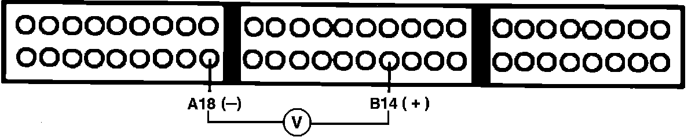
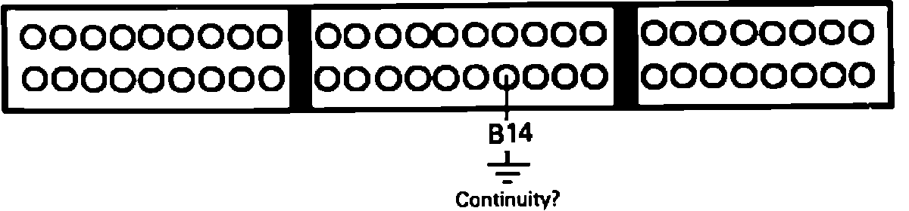
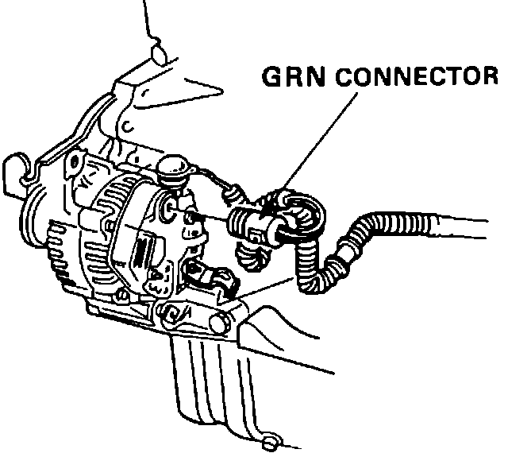

Alternator FR Signal Circuit Troubleshooting
1. Install test harness between ECU and connector. If test harness is not available, carefully backprobe wires at ECU connector.2. Disconnect ECU connector B from main harness only.
Alternator FR Signal Testing:

3. With ignition on, measure voltage between ECU terminals A18 and B14.
5 volts, proceed to step 5.
Not 5 volts, proceed to next step.
4. Replace electronic control unit. End of test.
5. Turn ignition off and reconnect ECU connector B to harness.
6. Start engine and run until cooling fan comes on.
7. With voltmeter still connected between ECU terminals A18 and B14, turn on headlamps and rear defogger.
Voltage decreased, proceed to next step.
No voltage decrease, proceed to step 9.
8. Alternator FR signal if normal, no further testing required.
9. Stop engine and disconnect ECU connector B from ECU only.
10. Disconnect negative battery cable.
Alternator FR Signal Testing:

11. Check for continuity to ground on harness terminal B14.
Continuity, proceed to next step.
No continuity, proceed to step 15.
Alternator Harness Connector:

12. Disconnect GRN connector from alternator.
13. Check for continuity to ground on harness terminal B14.
Continuity, proceed to next step.
No continuity, proceed to step 19.
14. Repair short to ground in WHT/RED wire between ECU and alternator. End of test.
15. Disconnect GRN connector from alternator.
16. Jumper WHT/RED terminal to ground.
17. Check for continuity between ECU harness connector B14 and ground.
Continuity, proceed to step 19.
No continuity, proceed to next step.
18. Repair open circuit between ECU and alternator GRN connector. End of test.
19. Alternator requires further inspection, refer to ELECTRICAL COMPONENT REPLACEMENT PROCEDURES.